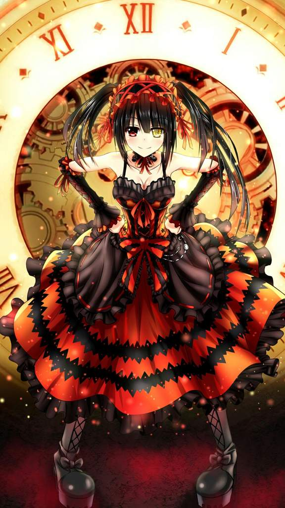

Materia
Aplicaciones WebUnidad 1

Kurumi Tokisaki (時崎 狂三ときさきくるみ Tokisaki Kurumi?) es el tercer Espíritu en aparecer en la serie Date A Live.
Debido a sus acciones brutales, se la conoce como el Peor Espíritu (最悪の精霊 Saiaku no Seirei?). Kurumi fue la primer antagonista presentada en la historia, pasando posteriormente a tomar un papel neutral hasta finalmente convertirse en una aliada de los personajes principales.
Unidad 2
La personalidad de Kurumi no es sencilla de determinar, al igual que muchos otros espíritus, ella sentía una gran aversión por los humanos cuando apareció por primera vez en la historia.